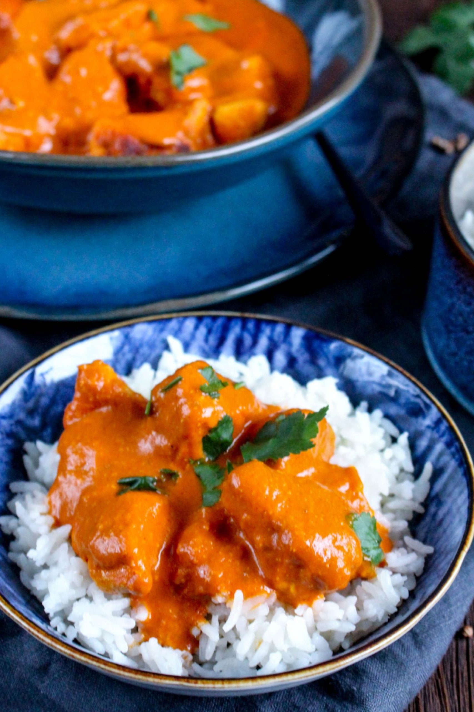

Creamy Chicken Tikka Masala

A world-famous classic of
Indian cuisine, now from the
comfort of your home!
Whether you're culturally familiar
with Indian cuisine or not; whether
you have an adventurous palate or not;
Tikka Masala is simply a MUST for you
and your loved ones to try.
Hearty, filling, and versatile, the
flavor profile of this dish is a
symphony: sweet and sour tomato creaminess
marry an ensemble of spices and seasonings
for an addictive, unforgettable finish.
Try it out; you'll thank me!
Tip:"Tikka" is a way
of cooking. We've gone with the standard,
ever-reliable and healthy chicken in this
instance, but don't be afraid to expand and
experiment once you get the hang of it. Other
popular versions opt for lamb or tofu instead!
Ingredients
- 1 ½ pounds skinless, boneless chicken thighs
- 1 tablespoon vegetable oil
- 2 teaspoons kosher salt
- 2 teaspoons garam masala
- 2 teaspoons ground cumin
- 1 teaspoon ground coriander
- 1 teaspoon smoked paprika
- 1 teaspoon ground turmeric
- ½ teaspoon ground black pepper
- ¼ teaspoon cayenne pepper
- ⅛ teaspoon ground cardamom
- 2 tablespoons clarified butter (ghee), or more as needed
Tikka Masala Sauce:
- 1 onion, chopped
- ¼ cup tomato paste
- 4 cloves garlic, finely grated
- 1 tablespoon finely grated ginger, or more to taste
- 1 cup crushed tomatoes
- 1 (13 ounce) can coconut milk
- ½ cup chicken broth, or as needed
- 2 tablespoons chopped fresh cilantro
- ½ teaspoon red pepper flakes
- salt and ground black pepper to taste
Steps
-
Gather all ingredients. Place chicken in a bowl.
Drizzle vegetable oil over chicken; toss to coat.
-
Whisk together salt, garam masala, cumin, coriander,
paprika, turmeric, black pepper, cayenne pepper, and cardamom in a small bowl.
Sprinkle over chicken and turn to coat evenly.
-
Melt clarified butter in a large, heavy skillet over high heat.
Cook chicken thighs in hot butter until browned on all sides, 5 to 10 minutes.
Transfer chicken to a plate. When cool enough to handle, cut chicken into bite-sized pieces.
-
Make sauce: Place the skillet with chicken drippings over medium-high heat.
Stir onion into the skillet; sauté until onion softens and turns translucent, 5 to 6 minutes.
Stir in tomato paste and cook until paste caramelizes, about 5 minutes.
Stir garlic and ginger into tomato-onion mixture; cook until fragrant, about 1 minute.
-
Pour crushed tomatoes into the skillet.
Bring to a boil while scraping the browned bits of food off of the bottom of the skillet with a wooden spoon.
Pour in coconut milk and chicken broth; bring to a simmer, reduce heat to medium-low, and cook,
stirring occasionally, until flavors blend and sauce is slightly reduced, about 15 minutes.
-
Stir chicken and any accumulated juices into sauce. Add cilantro and red pepper flakes;
bring to a simmer, reduce heat to medium-low, and cook until chicken is cooked through and tender, 10 to 15 minutes.
Season with salt and black pepper.
Home